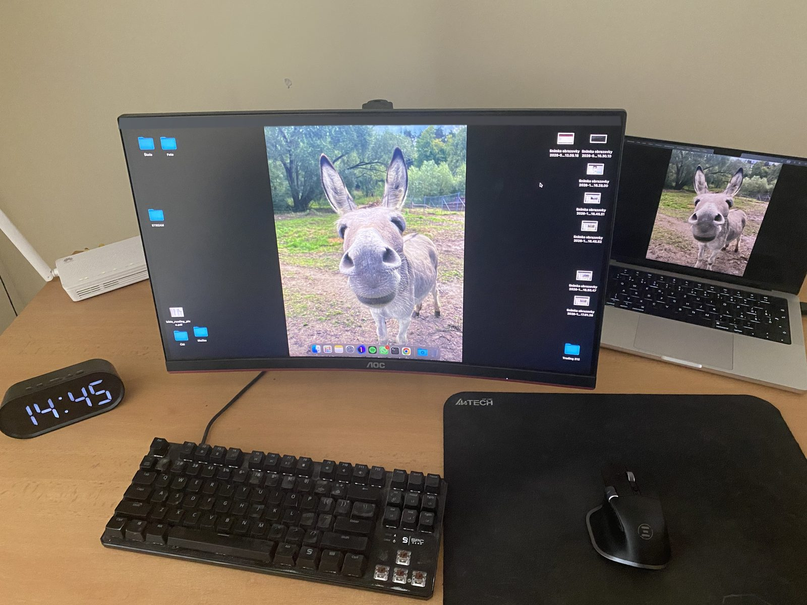

Moje pracovné prostredie
Takto vyzerá stôl, pri ktorom sa učím a pracujem. Pozrite sa, čo všetko na ňom mám.
Päť vecí na mojom stole


Gabriel Kováč
Všetko je to iba v hlave.
Takto vyzerá stôl, pri ktorom sa učím a pracujem. Pozrite sa, čo všetko na ňom mám.
